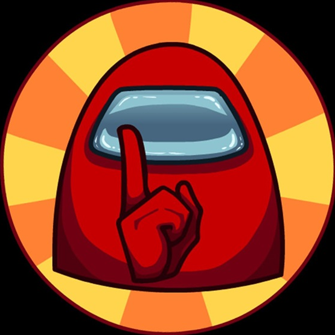
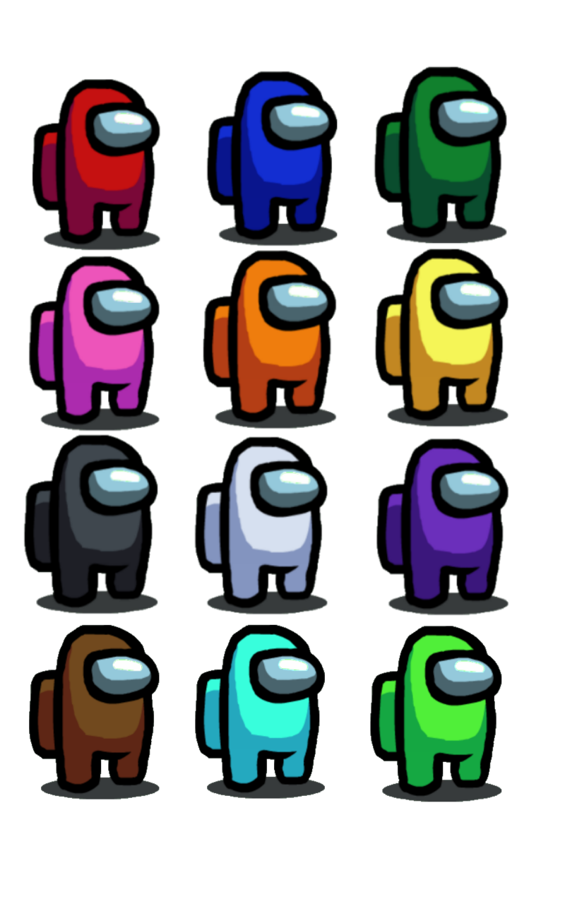

Az Among Us 2018-ban megjelent online videójáték, amelyet az InnerSloth amerikai játékstúdó fejlesztett és jelentetett meg. A játék egy űrtémájú környezetben játszódik, ahol a játékosok mindegyike kap egy szerepet, valaki legénységi tag, és valaki az előre meghatározott számú imposztor szerepet kapja. A legénységi tagok célja az imposztorok beazonosítása, kiszavazása és a feladatok elvégzése. Az imposztorok célja a legénységi tagok kiejtése, és a feladatok szabotálása. Eredetileg 2018. június 15-én jelent meg, de akkor kevés figyelmet kapott. Népszerűséget 2020-ban szerzett, mivel sok jól ismert Twitch-streamelő és YouTuber játszott rajta. A játék népszerűsége miatt 2020 augusztusában bejelentették a folytatást, az Among Us 2-t. Egy hónappal később, szeptemberben törölték a terveket, és inkább erre a játékra koncentrálnak.
Az Among Us többjátékos videójáték, amelyet 4–10 játékos játszhat. A játékosok közül 1–3-at véletlenszerűen választ ki a játék, hogy imposztor legyen, a többiek pedig legénységi tag szerepet kapnak. A játék négy pálya valamelyikén játszható le: egy űrhajón (The Skeld), egy központ épületén (Mira HQ) , egy bolygó bázisán (Polus) vagy pedig a „Toppat Clan" nevű fiktív bűnszervezet léghajóján (The Airship). A legénységi tagok feladatokat kapnak, amelyeket minijátékok formájában kell teljesíteni. Olyan munkákból állnak, mint például az elektromos kábelek újracsatlakoztatása vagy motorok üzemanyaggal való feltöltése.
Az imposztorok hamis feladatokat kapnak, hogy beolvadhassanak a legénységi tagok közé. Képesek szabotálni rendszert, a szellőzőnyílásokban mászkálni, azonosítani a többi imposztort és megölni a legénységi tagokat.

Ha egy játékos meghal, szellem lesz belőle. A szellemek képesek átmenni a falakon és befejezni a feladataikat, de más szellemeken kívül senki se látja őket.
Amikor az imposztor szabotázst hajt végre, annak vagy azonnali következménye van (például kialszik az összes lámpa), vagy megkezdődik a visszaszámlálás, és a szabotázst meg kell oldani, mielőtt lejárna az idő, különben az összes legénységi tag meghal. A szabotázsokat a játékosok különböző módon oldhatják meg, attól függően, hogy melyik szabotázst kell megoldani.
|  |
A legénységi tagok győznek, ha minden feladatot elvégeznek, mielőtt megölik őket, vagy megtalálják és kiszavazzák az összes imposztort. Az imposztorok győzelméhez annyi legénységi tagot kell megölni, hogy az imposztorok száma megegyezzen a legénységi tagok számával, vagy elfogyjon a szabotázsnál a visszaszámlálás. Ha egy játékos holttestet talál, bejelentheti, ami egy csoportos megbeszéléshez vezet, ahol a játékosok megbeszélik, hogy ki szerintük az imposztor. Az imposztorok személyazonosságának megállapítása érdekében az egyes pályákon különféle segítségek találhatók, például egy biztonsági kamerarendszer a Skeldben, egy napló a Mira HQ központjában és egy életindikátor a Poluson. Ha többségi szavazás születik, a kiválasztott személy kidobódik és meghal. A játékosok összehívhatnak sürgősségi értekezletet is, ha megnyomják a piros gombot a Cafeteriában. |
A játékosok szöveges csevegésben kommunikálnak, de csak értekezletek alkalmával beszélhetnek, és csak akkor, ha életben vannak, de a szellemek bármikor tudnak beszélni egymással. Bár a játék nem rendelkezik beépített hangcsevegő rendszerrel, a játékosok gyakran használnak külső programokat, például a Discordot játék közben.
Forrás: Az among us wikipedi oldala